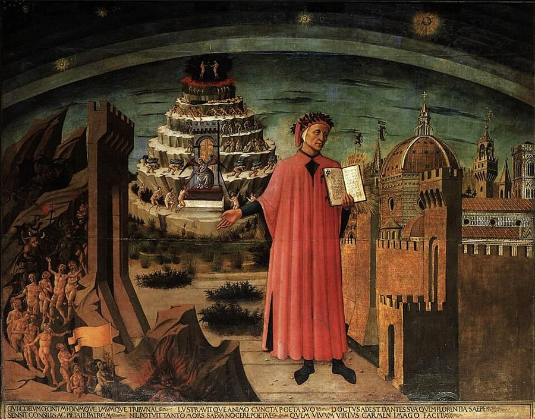
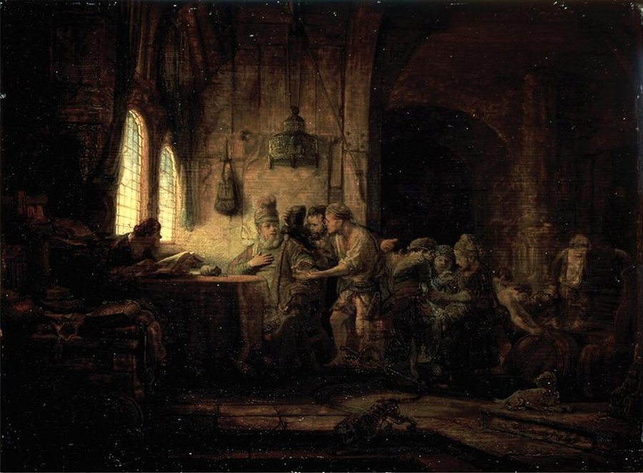
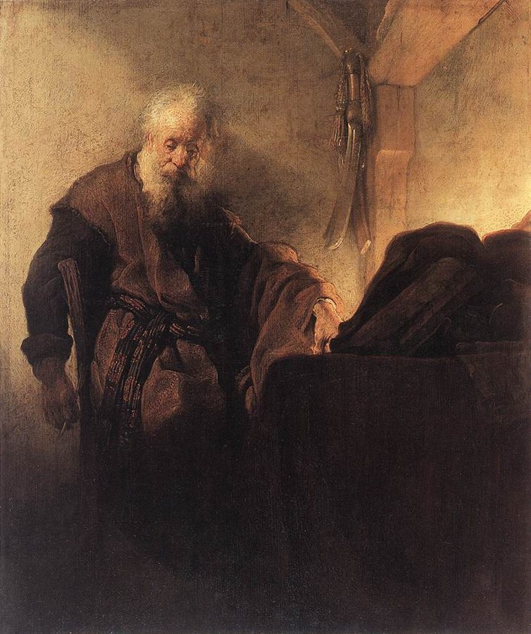
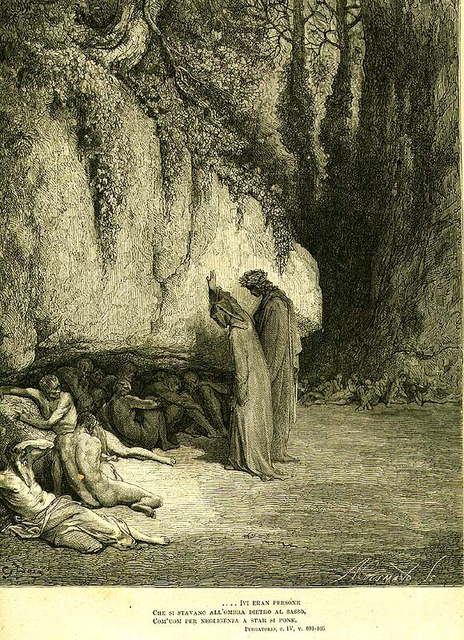

这一页在做什么
第 3 章换了舞台：从文学转到宗教，从此世转到来世。§1 读圣经：耶稣宣告末日就在眼前，召门徒时一刻也不许耽搁，讲的比喻里时间都在变短；保罗说「时日无多」，《彼得后书》却要回答末日为什么迟迟不来。§2 读但丁的《炼狱篇》：中世纪把人间的时间搬进了来世，罪要用时间来还。读的时候抓两条线：时间一短，平常的账还算不算；时间搬进彼岸以后，账怎么算。

Domenico di Michelino 1465 年的画，在佛罗伦萨大教堂：但丁手捧《神曲》，左边是走进地狱的罪人，身后一层层的山就是炼狱山，右边是佛罗伦萨城。这一页的 §2 就在那座山上。Domenico di Michelino / After Alesso Baldovinetti，公有领域，维基共享资源 读之前：这一页在全书的哪里
第 2 章看的是作家们怎样延长人生、对付「人生的中点」。第 3 章把同一个问题放进宗教：短的时间在此世和来世各怎么算。这一页是本章的前两节，下一页的富兰克林和韦伯要回到这里：第 4 节第 55 段明说要借用这一页的炼狱。第 1 章第 31 段让你到「第 3 章第 2 节」找人生之弓，这一节里其实没有弓（弓在第 2 章第 1 节）；只有第 37 段曼弗雷德的「两段半生」，不点名地接上了人生之弓 的算法。
时间短到末日就在眼前时，人还要不要精打细算？等到时间被搬进来世，它又是怎样变成一笔一笔可以清算的账的？
读的时候带着这几个问题。不用先找答案，读完回来对照「检查一下理解」。
耶稣不许门徒先去埋葬父亲，连孝敬父母的诫命都顾不上。作者用哪一句话解释这件事？§1
葡萄园的主人给干一小时和干十二小时的人一样的工钱。作者说这个比喻讲的是哪一种经济？他对这个读法有多大把握？§1
炼狱里的「报应」除了罪怎样犯就怎样罚，还多了哪一层？福雷塞、贝拉夸、曼弗雷德的账各是怎么算的？§2
这一页的路线
两节各走一条线。§1 照着圣经的顺序走：先是《诗篇》《传道书》劝人话要少，接着是耶稣说话简短、召人急迫，然后是两个比喻（葡萄园，飞鸟和百合），最后从十字架走到保罗和《彼得后书》：末日推迟了。§2 一开头像是换了题目，先讲 14 世纪以来的计时社会和勒高夫的论点，作者却马上说「先记住它」，转去讲炼狱的神学。第 23 段那个很长的问句是全页最难读的地方。从第 24 段起跟但丁上山，三个人物按罚得轻重排开：福雷塞走得快，贝拉夸在山脚慢慢等，曼弗雷德的账要用乘法算。读到 §2 觉得「怎么忽然说起商人」，本站的读法是：作者在给下一页的富兰克林和韦伯铺路，他自己只说「先记住」。
§1 此世：末日就在眼前
§2 来世：时间搬进炼狱
话要少
召门徒不等
葡萄园
保罗：时日无多
再临推迟
计时社会
勒高夫
算账的神
软答案
以时偿时
福雷塞
贝拉夸
曼弗雷德
第 19–23 段：神学 ｜ 第 24–37 段：跟但丁上山
本站示意图。蓝点是 §1，按圣经的顺序走；橙点是 §2，前半讲炼狱的神学，后半是但丁在山上遇到的三个人。 作者落在哪： 末日一推迟，时间又恢复了平常的长短。中世纪接着把这种人的时间搬进来世：炼狱里罪要按时间偿还，连上帝也成了可以打交道的算账人。曼弗雷德的账算下来，生前死后两段半生，大致凑成《诗篇》算的一生。
分节地图
这一页是原书第 3 章的第 1–2 节。粗体是这一节的主角；斜体是英文这一节开头的几个词，在电子书里搜它就能跳到那里；节里的转折用段号点出来。读完打个勾。
耶稣、保罗：末日前只剩一会儿约 2200 词 The Jewish Bible, which Christians call … 第 9 段起是葡萄园的比喻，第 16 段起转到末日推迟。 但丁的炼狱：福雷塞、贝拉夸、曼弗雷德约 2200 词 In the fourteenth century, a period … 第 19–23 段是勒高夫和炼狱神学，第 24 段起跟但丁上山，第 32 段起是曼弗雷德。
先用中文过一遍：这一页的概念
作者常常一笔带过、默认你懂的概念，这里先从书外讲一遍：它从哪来，是什么意思。它在这一页起什么作用，看每块最后一句。讲过的概念都汇总在概念汇总 。
§1 末世和再临的推迟 eschatology；parousia eschatology（末世论）来自希腊文 eschatos「最后的」，讲世界终结、审判、死者复活这些「最后的事」。parousia 本义是「在场、到来」，希腊化时代也用来说君王驾临一座城；新约用它指基督在末日再来，中文叫「再临」。最早的信徒相信这一天就在眼前；日子一年年过去，再临没有来，就得解释为什么。德语新约学把这个问题叫「再临的推迟」（Parusieverzögerung）。可以想成一个「下周就上线」的项目：人人顾不上写文档、修旧毛病；上线日期一再推后，日常的维护又回来了。
在这一页： 第 8 段第一次出现 parousia；第 16–18 段讲它推迟以后，时间重新变得和从前一样长短。
§2 炼狱和同态报应 Purgatorium；contrappasso 炼狱（拉丁文 Purgatorium，来自 purgare「洁净」）是天主教的教义：死时已蒙救赎、但罪罚还没还清的灵魂，进天堂之前先在这里涤净；活着的人为他们祈祷，可以缩短这段时间。勒高夫考证，名词 purgatorium 到 12 世纪后期才出现；1274 年第二次里昂大公会议写进了教会文件。新教改革家否认炼狱。同态报应是古老的「以眼还眼」（lex talionis）；但丁的说法叫 contrappasso：惩罚的样子照着罪的样子来，贪吃的挨饿，懒的久等。
在这一页： 第 21–25 段讲炼狱怎样把人的时间带进来世，报应除了「什么样」还要算「多长」；第 26–37 段是三个例子。
§2 神义论 theodicy（Leibniz，Théodicée） theodicy 由希腊文 theos「神」和 dikē「正义」拼成，意思是「为神辩护」。这个词出自莱布尼茨 1710 年的《神义论》（Essais de Théodicée）。它要回答的难题是：上帝既全能又全善，世上为什么有恶？莱布尼茨的回答是，这是所有可能的世界里最好的一个，恶是整体最好所付的代价；伏尔泰的《老实人》（1759）就是嘲讽这个答案的。神义论像一份辩护词：先假定被告无罪，再为指控找出解释。
在这一页： 第 23 段作者拿它比照，提出更早的「前神义论」：上帝既慈悲又是严厉的审判者，怎么兼得。
书里的人和作品
按在书里出现的顺序排，标题前是节号。作品只讲到读懂这一节需要的程度。
§1 你读到的是哪一种圣经§1 里的圣经引文有三种来历。旧约（犹太人的《希伯来圣经》）照注 1 用的是犹太出版协会 1985 年的英译本 Tanakh，注 1 说《诗篇》那句「我们便飞去」是按德文原书改过的。新约那些带 ye、thee、giveth 的句子是 1611 年的钦定本（King James Version）的说法。括号里的 Vulgate 是武加大本，哲罗姆 4 世纪末起译的拉丁文圣经，中世纪西欧通用；作者常把它的拉丁原词放进来，因为后面的论证要靠这些词（tempus、otiosum）。
§1 耶稣和门徒作者从福音书里挑的都是「急」的场面：耶稣在加利利海边召渔夫，叫他们立刻放下一切跟着走。书里说彼得和安得烈撇下了「船和父亲」；马太福音 4:22 这句说的其实是雅各和约翰，彼得和安得烈撇下的是网（4:20）。作者拿这些场面说明，在末日迫近的时间里，连照顾父母也要让路。
耶稣 Jesus of Nazareth 基督教的创立者。书里照传统说法，说他在世三十三年，约三十岁开始传道。这一页里是「时间短」的宣告者。
施洗约翰 John the Baptist 在约旦河边给人施洗的先知。第 5 段说他先讲了「天国近了」，自认只是耶稣的先驱。
彼得和安得烈，雅各和约翰 Peter, Andrew, James, John 两对兄弟，都是加利利海的渔夫，最早被召的门徒。约翰后来在十字架下受托照顾耶稣的母亲（第 16 段）。
§1 葡萄园工人的比喻出自马太福音 20:1–16。家主一大早雇人进葡萄园，后来又几次出去雇人，最晚一批只干了一个钟头，结账时每人都拿一个银币（钦定本译作 a penny）。先来的抱怨，家主说：我给你的不少，我愿意给后来的和你一样，你就红眼了吗？比喻以「在后的将要在前」收尾。书里第 10 段说雇人的钟点是第三、第七、第九、第十一时；马太福音原文是第三、第六、第九、第十一时（时辰从早上六点左右算起）。作者拿它说明：在只剩一点时间的世界里，算钟点已经没有意义。

伦勃朗 1637 年的《葡萄园工人的比喻》，藏圣彼得堡埃尔米塔日博物馆。窗下坐着的是家主，凑上来的工人在为工钱争辩。Rembrandt，公有领域，维基共享资源 §1 保罗和《彼得后书》保罗（Paul）原是迫害信徒的犹太人，归信后成了最重要的传教者，他写给各地教会的书信是新约里最早的文字。《哥林多前书》写给希腊城市哥林多的信徒，约在公元 50 年代中期。第 7 章讨论还该不该结婚：「时日无多」那句就在这里。保罗在别处（《帖撒罗尼迦前书》第 4 章）说过，主再来时，已死的信徒先复活，「我们这活着还存留的」一同被提，书里第 16、17 段说的就是这一层。《彼得后书》署名彼得，不少现代学者认为是后人托名写的，它第 3 章正面回应「主再来的应许在哪里」。

伦勃朗约 1629–1630 年画的使徒保罗，坐在书桌前沉思。墙上的剑是画家们给保罗的常见标志。Rembrandt，公有领域，维基共享资源 §2 勒高夫：一篇文章，一本书勒高夫（Jacques Le Goff，1924–2014），法国中世纪史家，年鉴学派的代表。§2 用了他两样东西，别混：第 20 段的「教士时间 / 商人时间」出自 1960 年的一篇文章，法文题目是「教会的时间和商人的时间」（注 12），说中世纪后期商人渐渐从教会手里夺走了对时间的支配；第 21 段起用的是他 1981 年的书《炼狱的诞生》，讲炼狱这个「第三处所」怎样在中世纪成形，并把但丁算作塑造它的人之一。作者只说前一个论点要「先记住」，没说回到哪里；读下一页的富兰克林和韦伯时可以想着它。
§2 但丁和《炼狱篇》但丁（Dante Alighieri，1265–1321）的《神曲》分《地狱篇》《炼狱篇》《天堂篇》三部，共一百歌。故事设在 1300 年复活节前后，诗人维吉尔领着但丁走过地狱和炼狱。炼狱是南半球海中的一座高山：山脚是「前炼狱」，给拖到临终才悔改的人等候；往上是七层平台，各洗一种罪（骄傲、嫉妒、愤怒、怠惰、贪财、贪食、色欲）；山顶是地上乐园。书里说「九层」，是连山脚和山顶一起数的。英译引文用的是 Singleton 的译本（注 14 的译者注）。
§2 山上的三个人作者挑的三个人，罚的方式各不相同。福雷塞在第六层（贪食者那一层），死了不到五年，靠妻子奈拉的祈祷走得飞快。贝拉夸是作者讲的「懒人」：早期注家说他是佛罗伦萨一个做乐器的匠人，出名地懒。书里说他要等的年数和生前浪费的一样多；但丁原诗（第 4 歌）说的是，拖到最后才悔改的人，要在门外等上和一生一样长的时间。曼弗雷德被绝罚而死，按原诗（第 3 歌）要在山脚等上绝罚时间的三十倍，除非有人为他祈祷缩短。
福雷塞·多纳蒂 Forese Donati，?–1296 但丁年轻时的朋友，两人还互写过一组挖苦对方的十四行诗。在《炼狱篇》第 23–24 歌出场。
贝拉夸 Belacqua 但丁的熟人，在《炼狱篇》第 4 歌里躲在大石头后面的阴影里，抱着膝盖不想动。
曼弗雷德 Manfred（Manfredi），约 1232–1266 皇帝腓特烈二世的儿子，西西里国王。1266 年在贝内文托战死，对手是教宗支持的安茹的查理。在《炼狱篇》第 3 歌出场。书里说他 1265 年被克雷芒四世绝罚；史书上他早在 1250 年代就被教宗绝罚过，此后几任教宗一再重申。

《炼狱篇》的版画插图，下面印着第 4 歌第 103–105 行：一些人待在大石头背后的阴影里，就像人懒得动时那样。贝拉夸就在这群人里。作者不详，公有领域，维基共享资源
1232 出生
1266 贝内文托战死
1300 但丁来到山脚
在世 34 年
死后在前炼狱 34 年
绝罚 1 年 × 30 = 30 年
4
34 + 34 = 68，接近《诗篇》的人寿七十：两段半生
本站示意图。按书里第 37 段的算法画：绝罚的一年按三十倍算，剩下四年还的是其他的罪。一年绝罚是书里的前提，但丁原诗没说曼弗雷德被绝罚了多久。 图里的引文
下面这几段在你的电子书里是图片，长按查不了词，也搜不到。每块先说它在屏幕上的位置，再逐行给中文意思；行首的斜体是图里这一行开头的几个词，用来和图对上。古人的诗本站据原作的语言译，不从英译转译。
§2 第 34–35 段 · 但丁《炼狱篇》第 3 歌第 122–123 行，曼弗雷德的话 · 意大利文，下面一张是英译在第 33 段末尾（…That is enough to gain divine mercy:）之后。先是意大利文的两行，紧跟着一张是 Singleton 的英译。本站据意大利文译。
ma la bontà infinita … 可是无限的善有那么宽大的臂膀，che prende ciò … 凡是转向它的，它都接住。
英译用 It 大写指上帝的善，意大利文是阴性代词 lei，指 bontà。英译 all who 是「所有人」，意大利文 ciò che 字面是「凡是……的东西」，范围说得更宽。前一行（第 121 行）就是第 32 段引的「我的罪是可怕的」。
bontà infinita
第 1 行
（意大利文）无限的善
bontà 是善、仁慈，指上帝。英文 bounty（慷慨）和它同出拉丁文 bonitas。
sì gran braccia
第 1 行
（意大利文）那么宽大的臂膀
sì 在这里不是「是」，是「如此」，和下一行的 che 连成「如此……以至于」。braccia 是 braccio（手臂）的复数。
si rivolge a lei
第 2 行
（意大利文）转向它
rivolgersi 是转过身来朝向，宗教语境里就是悔改、归向上帝。lei 指上一行的 bontà。曼弗雷德临死那一下转身，就够了。
词与短语
你用 Kindle，单个生词长按就能查，这里只收词典帮不上的：每个词都认识、合起来不懂的说法，学术腔，没翻译的外文，典故。斜体小字是原句里连续的几个词，错字照电子书原样，搜它就能跳到那里。图里的词在上面「图里的引文」里。
§1 耶稣、保罗：末日前只剩一会儿
precious life-time
… to waste precious life-time on vain things.
宝贵的生命时间
life-time 中间有连字符，是全书的术语，见
生命时间 ，不是普通的 lifetime（一辈子）。
Vulgate: brevi sermone
… (Vulgate: brevi sermone), or 2 Maccabees, …
（拉丁文）武加大本作：用简短的话
《但以理书》7:1 说但以理把梦「简略地」写下来。Vulgate 是哲罗姆译的拉丁文圣经。2 Maccabees 是《马加比二书》，天主教圣经里有，新教圣经不收。
master words (kyrioi logoi)
… (kyrioi logoi) whose structure allows us …
（希腊文）主要的话、权威的话
指学者设想的、福音书成书之前流传的一批耶稣语录。作者说它们短得几乎像格言，接回第 1 章希波克拉底的箴言。
textual embedding
In their textual embedding, their memorable …
在经文上下文里的位置
程序员看到 embedding 会想到向量嵌入，这里是语文学的说法：一句话被「嵌」在一段叙事里。
multiloquium
… longwinded prayers (Vulgate: multiloquium), as if …
（拉丁文）多话、啰嗦
multi（多）+ loqui（说）。马太福音 6:7 说外邦人以为话多了必蒙垂听。紧接着耶稣教的主祷文只有几句。
omne verbum otiosum
… (Vulgate: omne verbum otiosum) that men …
（拉丁文）一切闲话
otiosum 和 otium（闲暇）同根。塞涅卡那里 otium 是好东西（见
闲暇 ），到了这里「闲」的话却要在审判日交账。作者没点破这层照应。
under the imperative of
… under the imperative of a temporality …
受……的驱使，服从……的要求
学术腔。整句：他让自己的信息服从一种时间性的要求，这种时间要人马上做决定。
Impletum est tempus
… (Vulgate: Impletum est tempus), and the …
（拉丁文）时候满了
马可福音 1:15。希腊原文这里的「时候」是 kairos，不是 chronos，也就是第 4 章要讲的
时机 。
modicum tempus
… (Vulgate: modicum tempus) to make their …
（拉丁文）一点点时间、一会儿
约翰福音 7:33，钦定本译作 Yet a little while am I with you。这一节的标题 Yet a Little While 就从这里来。
take up their vocations
… delay in taking up their vocations.
接受召唤，走上被召的路
vocation 今天多指职业，原义是拉丁文 vocatio「呼召」，宗教上是上帝的召唤。这里是本义。
let the dead bury their dead
… that he come along without delay: …
任凭死人埋葬他们的死人
马太福音 8:22。这句话本身就很费解，通常解作：让在灵性上「死」的人去料理丧事。作者看重的是它的急：连葬父的时间都不给。
leave someone in the lurch
… simply leave them in the lurch-no longer …
在人有难时撒手不管
固定说法，和 lurch（踉跄）无关。后面的连字符其实是破折号，插入语到这里结束。
the Fourth Commandment
Does the Fourth Commandmentwhich explicitly demands …
第四诫：孝敬父母
天主教和路德宗把「当孝敬父母」数作第四诫；犹太教、东正教和改革宗数作第五诫。作者是德国人，用的是前一种数法。Commandmentwhich 是两个词粘在一起，中间原是破折号。
the Son of Man
… the authority of the Son of Man.
人子
福音书里耶稣自称的说法，出自《但以理书》第 7 章那位驾云而来的「像人子的」。
parousia
… whose appearance (parousia) is soon to occur, …
（希腊文）再临
见概念块「末世和再临的推迟」。
paterfamilias
… (Vulgate: paterfamilias). In ancient contexts-we …
（拉丁文）家主、一家之长
罗马法里对全家人和财产有权的家长。作者借亚里士多德提醒：家是经济单位，economics 原是「管家」，见
经济 。
taken on
… in the marketplace and wait to be …
被雇用
take on 是雇人，后面就是 taken on 加引号。不是「承担」。
a penny a day
… same pay: a penny a day.
一天一钱银子
钦定本把罗马银币 denarius 译成 penny。一个银币大约是当时一天的工钱，并不少。
side with
… have also sided with the workers …
站在……一边
不是「在旁边」。作者说他能想象今天的许多读者也站到工人一边，替他们要求同工同酬（equal pay for equal work，现代劳工运动的口号）。
I can’t very well imagine
I can't very well imagine even …
我实在很难想象
can’t very well 是「不大可能、不便」，不是「不能很好地」。作者的口气是怀疑，不是断言。
a temporal economy
… not in a money economy but rather …
时间的经济
前面有 It seems to me：这是作者自己的读法。比喻里的家主不按钟点算钱，作者说要算的是剩下多少时间。
the last called
… as they are known in the language …
最后被召的人
作者说这是神学里的叫法。在比喻里就是只干了一个钟头的那批工人。
before time is up
… single hour before time is up.
在时间到点之前
time is up 是「时间到了」，考试收卷时说的话，不是「时间往上」。
eschatological temporality
… context of the eschatological temporality taught …
末世的时间性
eschatological（末世论的）见概念块。temporality 是哲学里的「时间性」：一种时间被体验、被组织的方式。
worth it
… to haggle over a few pennies, because …
值得（费这个劲）
原文 worth it 加了引号，说「为几个钱讨价还价不再划算」。用的还是经济的说法，只是算的东西换了。
as a compensation (also an economic concept!)
… as a compensation (also an economic concept!) …
作为补偿（这也是个经济概念！）
作者的自嘲：刚说完这个比喻不讲经济，自己劝人的话里又冒出一个经济词。compensation 也是「报酬」。
they neither preen, nor sow, nor reap
… (they neither preen, nor sow, nor reap) …
它们不梳羽毛，不种，也不收
马太福音 6:26–28：飞鸟不种不收，百合不劳苦也不纺线。preen 是鸟梳理羽毛，福音书里没有这一项。
delayed, to be sure, but not
… that was delayed, to be sure, but …
固然推迟了，但……
to be sure 是让步，「诚然」，后面跟 but 转折，不是「确定地」。第 17 段开头的 to be sure 也是这个用法。
a true man
… Jesus can claim that he is also …
真正的人
神学术语，拉丁文 vere homo。451 年卡尔西顿公会议定下：基督是真神也是真人。作者借它说：既是真人，也就受时间支配，可能低估了时间。
tempus breve est
… (Vulgate: tempus breve est).9 However, in …
（拉丁文）时候短了
哥林多前书 7:29。希腊原文是「kairos 被压缩了」，注 9 引的 RSV 译作 the appointed time is grown very short，更贴原文。
not in terms of generations
… but still not in terms of generations:
还没想到要按一代代人来算
in terms of 是「从……角度、按……来算」。作者说保罗想的时间比耶稣说的长一些，但还没长到几代人。
he that giveth her in marriage
… he that giveth her in marriage doeth …
把女儿嫁出去的人
钦定本的古英语（giveth、doeth），说的是父亲嫁不嫁女儿。注 10 是译者 Rendall 的话：RSV 的译法是男人娶不娶未婚妻，和钦定本差得远。
§2 但丁的炼狱：福雷塞、贝拉夸、曼弗雷德
clerk’s time
… two different forms of time he called …
教士的时间
clerk 在这里不是职员，是古义「教士、识字的人」，作者在括号里解释了。勒高夫文章的法文题目说的是「教会的时间」。
shaped or even invented
… shaped or even invented the conception …
塑造了，甚至发明了
or even 是递进：说得更重一层。这是作者转述勒高夫的看法。
Il tempo e caro in questo regno
In Dante's Purgatorio we read that …
（意大利文）在这个国度里时间是宝贵的
《炼狱篇》24.91–92，福雷塞告别时对但丁说的。电子书里 e 丢了重音，应为 è（是）。caro 既是「宝贵」也是「贵」。
the currency of time
… in the most precious currency of all, …
时间这种货币
时间当钱用，见
时间就是金钱 。第 31 段又说欠下的要用「时间这种货币」偿还。
computus
… the computation (computus) of human destiny …
（拉丁文）推算
中世纪专指推算复活节日期的历法学问。用在这里，是说上帝也在给人的命运「排日子」。
homo mercator … Deus mercator
… in his own image a Deus mercator …
（拉丁文）做买卖的人……做买卖的神
反用《创世记》「神照着自己的形象造人」：这里是商人照着自己的样子造出一位可以打交道的神。作者说 perhaps even haggle，「甚至也许能讨价还价」，限定词别丢。
for a certain time very problematic and extremely durable
… for a certain time very problematic …
有一阵子问题很大，却又极其经久
for a certain time 是「有一段时间」，不是「确定的时间」。两个评语并排，带点反讽：麻烦的东西偏偏最长命。
fairly elegant and to some extent dialectical
… fairly elegant and to some extent dialectical …
相当巧妙，某种程度上是辩证的
两个限定词 fairly、to some extent，作者的称赞是有保留的。dialectical 指在两个对立面（天堂、地狱）之间找出第三条路。
proto-theodicy
… a moral-theological proto-theodicy that in analogy …
前神义论
作者自己的说法，比照后来的
神义论 。这一段的长问句可以拆成：上帝既然无限慈悲，怎么又能是一刀切地分好人坏人的严厉法官？炼狱就是这个硬问题的软答案。
un enfer à temps
… borrow Le Goff's apt phrase, Purgatory is …
（法文）有期限的地狱
à temps 在法文法律里指有期徒刑，和 à perpétuité（终身）相对。勒高夫的意思：炼狱就是判了有期的地狱。电子书里 à 丢了重音。
lex talionis
… the ancient principle of retribution or …
（拉丁文）同态报复法
「以眼还眼，以牙还牙」，《出埃及记》21:24 和罗马《十二表法》里都有。talio 和 talis（这样的）同根，第 25 段后面就是在讲这个词源。
contrappasso
… contrappasso (lit., counter-step). Retribution involves …
（意大利文）同态报应
《地狱篇》第 28 歌的用词。书里说字面是「反向的一步」（passo 是步）；一般认为它来自经院哲学的拉丁词 contrapassum（passum 是「承受」）：阿奎那讨论过这个词，指受的要和做的相当。
qualis-talis
… according to the rule of qualis-talis;
（拉丁文）怎样的……就这样的
qualis 问「什么样」，talis 答「这样」：罪是什么样，罚就是什么样。前面引的「我活着是什么样，死了就是什么样」是《地狱篇》14.51 卡帕纽斯的话。
lex quantionis (quantum-tantum)
… roughly in accord with a temporally measured …
（仿拉丁文）按量报应的法则
不是正式术语：作者仿 lex talionis 拼出来的，所以加了引号、前面有 roughly。quantum 问「多少」，tantum 答「这么多」：罪犯了多久，就罚多久。
dove tempo con tempo si ristora
Thus Dante the theologian tells us …
（意大利文）在那里，时间用时间来偿还
《炼狱篇》23.84。通行本作 tempo per tempo，书里和注 16 都写 con，意思一样。ristorare 是补偿、修复。
move up to
… has already moved up to the sixth …
已经升到
就是字面的往山上走，同时也是「晋级」：炼狱山越往上离天堂越近。
vedovella
… (vedovella) he loved so much, whose …
（意大利文）小寡妇
vedova（寡妇）加指小的 -ella，带着疼爱。福雷塞说的是妻子奈拉。
Antepurgatory (Anti-Purgatorio)
… (Anti-Purgatorio), placed like a sort of waiting …
前炼狱
炼狱山脚的一片坡地，还没进门的灵魂在这里等。作者把它比作候诊室一样的 waiting room。
that’s how he was in life as well
But Dante knows him-that's how he …
他活着时就是这副样子
口语，带着笑：但丁一看就认出这个老熟人，懒到死后还懒。连字符处原是破折号。
atonement balance
… year by year from his atonement balance, …
赎罪账户上的余额
balance 是账户余额。作者故意用记账的词说赎罪，接回第 22 段的「做买卖的神」。
keeping a sharp eye on the starry heavens above
… keeping a sharp eye on the starry …
紧盯着头上星空的运转
不是在看星星：时间按天体转了多少圈来算，等多少年就看天转多少年。原诗里贝拉夸就说要等「天绕着我转」够数。
it was already high time to
… it was already high time to repent …
早就该……了
high time 是「早该做了」，不是「高光时刻」。
get on with
… Dante to get on with his journey …
接着赶路，别耽搁
get on with 是继续做手上的事。前面维吉尔那句意大利文应为 che perder tempo a chi più sa più spiace：越明白的人越恨浪费时间。
weigh heavily in the balance
Wasting time weighs particularly heavily in the …
在天平上分量特别重
balance 在这里是天平（审判的秤），不是第 29 段的账户余额。
excommunicate
… and he remained excommunicate until his death.
（形容词）被绝罚的
平常是动词「开除教籍」，这里作形容词用，末尾的 -ate 读得轻，像 -it。绝罚就是逐出教会、不许领圣事。
Nothing is impossible for divine grace
Nothing is impossible for divine grace.
对神的恩典来说没有不可能的事
让人想到路加福音 1:37 天使对马利亚说的话：在神没有不能成的事。
oratio iaculatoria
… (oratio iaculatoria). As he tells the …
（拉丁文）短祷、射祷
iaculum 是标枪，射祷就是像投枪一样一句话射向天的短祈祷。前面加引号的 quick prayer 是它的英文。
dies in contumacy of Holy Church
Multiplication is calculation for rulers. Manfred himself …
至死违抗教会
contumacy 是法律词，拒不服从、藐视（法庭或教会）。曼弗雷德这句话后面接着说要等「三十倍」。
special account
… of which thirty are assigned to the …
专项账户
原文加了引号，是记账的说法：三十年记在「绝罚专户」上。书里说曼弗雷德在这位教宗的绝罚下活了一年，乘以三十。
two half-lives
These are two half-lives that correspond …
两段半生
不是物理学的「半衰期」。在世 34 年、死后 34 年，合起来接近《诗篇》说的人寿七十，见
人生之弓 。作者没注出处，本站看是暗接第 2 章第 1 节。
读不通的扫描错字：
… the head the of the family … 多了一个 the，应为 the head of the family。… additional workersday-laborers, as people … 应为 workers—day-laborers（打零工的）。… non sono v6lti infino a qui … v6lti 应为 vòlti（转过、过去），意思是「还没过去五年」。… a chi pin sa pin spiace … pin 应为 più（越）。
读完：作者到底说了什么
读完这一页的几节再看。下面是作者在这几节里的论点，由本站按论点重新组织，不按原书的顺序；每条右上角是依据所在的段落，拿不准就回书里那几段再读一遍。
末日迫近时，时间短到压倒一切平常的义务 耶稣召门徒不许耽搁，连照顾父母的诫命也让了路。作者的解释只有一句：因为时间短。世界马上要变，长远的照料和预备都多余了；这是一段例外的时间，平常的规矩暂停。
§1 第 5–8 段 在作者看来，葡萄园比喻讲的是时间经济，不是金钱经济 作者承认这个比喻做不了经济政策的基础，也难想象哪个社会这样管工人。但他觉得，比喻说的是剩下的时间一天天变短；在末世的经济里，为几个钟头、几个钱计较已经不值得。飞鸟和百合也是这个道理。
§1 第 12–15 段 末日一推迟，时间又回到平常的长短 门徒们相信再临只是推迟、没有落空；保罗想的时间长了一些，还没长到几代人。到了《彼得后书》，「一日如千年」，人的一生重新放回此世的时间里，时间又和从前一样或长或短。
§1 第 16–18 段 炼狱把人的时间带进来世，商人照自己的样子造了一位算账的神 作者借勒高夫说，炼狱在天堂、地狱两种永恒之间插进一段按人的时间设想的中间地带。来世的赎罪要按时间算，上帝成了可以打交道、也许还能讨价还价的「商人之神」。它也给一个神学难题一个软答案：上帝怎样既慈悲又严厉。
§2 第 21–23 段 炼狱的公义是时间上的公义：以时偿时 地狱的报应只问罪是什么样，炼狱还要问多长。福雷塞贪吃几年就饿几年，贝拉夸懒多久就等多久，曼弗雷德的绝罚要乘三十倍。作者因此说，前炼狱本身就是一篇论时间价值的神学论文。
§2 第 25–36 段
合起来： 时间的长短决定人怎样算账：末日迫近时不必算，末日推迟后又开始算，到中世纪一直算进了来世。人间和天上用的是同一种货币：时间。下一页的富兰克林和韦伯，就从这本账接着讲。
值得停下来的句子
It seems to me that in this parable we are not in a money economy but rather in a temporal economy.— §1 第 13 段。本站译：在我看来，这个比喻里我们所在的不是金钱的经济，而是时间的经济。
判断落在 not … but rather 上：先否定一个，再换上另一个。开头的 It seems to me 是限定，作者在说自己的读法，不是在替福音书下定义。「我们」在比喻里，是作者把读者也拉进了葡萄园。
That is the hard question to which the intermediate realm of Purgatory is the soft answer.— §2 第 23 段。本站译：这就是那个硬问题，炼狱这个中间地带是它的软答案。
前面是全页最长的一个问句，这一句把它收住。hard 和 soft 对仗：硬问题是非此即彼、一判永恒的严格；软答案是给出第三个地方、一段有期限的时间。to which 引出的从句里，答案和问题挂在一起，英语读起来像一句格言。
检查一下理解
先在心里答，再点开。答错的那题，回书里把对应那一节再读一遍。
1.（§1）耶稣召门徒不许耽搁，连孝敬父母的诫命都顾不上。作者怎么解释？ 因为时间短。世界的大变动就在眼前，长远的照料和预备都多余了，平常的规矩在这段例外的时间里暂停。
2.（§1）葡萄园的家主给干一小时和干十二小时的人一样的工钱。作者怎样读这个比喻？ 他说「在我看来」这讲的是时间经济：剩下的时间越来越短，在末世的经济里为几个钟头、几个钱计较已经不值得。他也承认，这当不了现实的经济政策。
3.（§1）《彼得后书》怎样回答「主再来的应许在哪里」？这对时间意味着什么？ 它引《诗篇》说，主看一日如千年、千年如一日。再临推迟了，人的一生重新放回此世的时间里，时间又和从前一样或长或短。
4.（§2）Deus mercator 是什么意思？作者为什么说它是 homo mercator 造出来的？ 「做买卖的神」。中世纪后期的商人照着自己的样子，想出一位会算账、可以打交道、也许还能讨价还价的上帝，赎罪也按时间来计算。
5.（§2）作者说炼狱是一个「软答案」。它回答的硬问题是什么？ 上帝既无限慈悲，又要在人死后立刻、永远地把人分进天堂或地狱，可大多数人不好不坏。炼狱给了第三个地方和一段有期限的时间，让慈悲和严厉都说得通。
6.（§2）福雷塞死了不到五年就到了第六层，贝拉夸却还在山脚等。为什么？ 福雷塞的妻子奈拉在世上为他祈祷，缩短了他赎罪的时间。贝拉夸生前懒，拖到老才悔改，按时间上的报应，他要在山脚等足够长的年数。
7.（§2）曼弗雷德的 34 年是怎么算出来的？作者看出了什么巧合？ 作者按一年绝罚乘三十，再加四年给其他的罪，从 1266 年到 1300 年正好 34 年。他生前也活了 34 年，两段半生加起来接近《诗篇》说的人寿七十。
用一句话说这一页，写给一个没读过的人。
想一想：假如你确知三个月后手上的工作、项目或某段生活就会彻底结束，哪些事会立刻显得不值得做，哪些仍然值得？要是那个日子一推再推，你会回到原来的样子吗？
精彩回顾
读过又忘了，从这里想起来。挑的是这一页最值得记住的人、说法和比喻，不按原书顺序；每条后面是节号，想细看就回书里那一节。全书各页的这一节都收在全书回顾 。
一句话： 末日迫近时时间短得不必算账，末日推迟后时间回到平常；中世纪的炼狱又把人的时间搬进来世，罪要用时间偿还。
只剩一会儿 耶稣说跟随者只有「一会儿」，拉丁文 modicum tempus。所以门徒连葬父都不许，答案只有一句：时间短。
§1 一样的工钱 葡萄园里干一小时和干十二小时拿一样的钱。作者说在他看来，这讲的不是金钱经济，是只剩一点时间时的时间经济。
§1 一日如千年 再临迟迟不来，《彼得后书》说主看一日如千年。人的一生重新放回此世，时间又和从前一样长短。
§1 做买卖的神 中世纪的商人照着自己的样子，造出一位会算账、也许能讨价还价的上帝。炼狱是给「上帝怎能既慈悲又严厉」的软答案。
§2 以时偿时 炼狱的报应不只问罪是什么样，还问犯了多久。福雷塞贪吃几年就饿几年，贝拉夸懒多久就在山脚等多久。
§2 两段半生 曼弗雷德活了 34 年，死后在山脚又等了 34 年，合起来接近《诗篇》的人寿七十。
§2